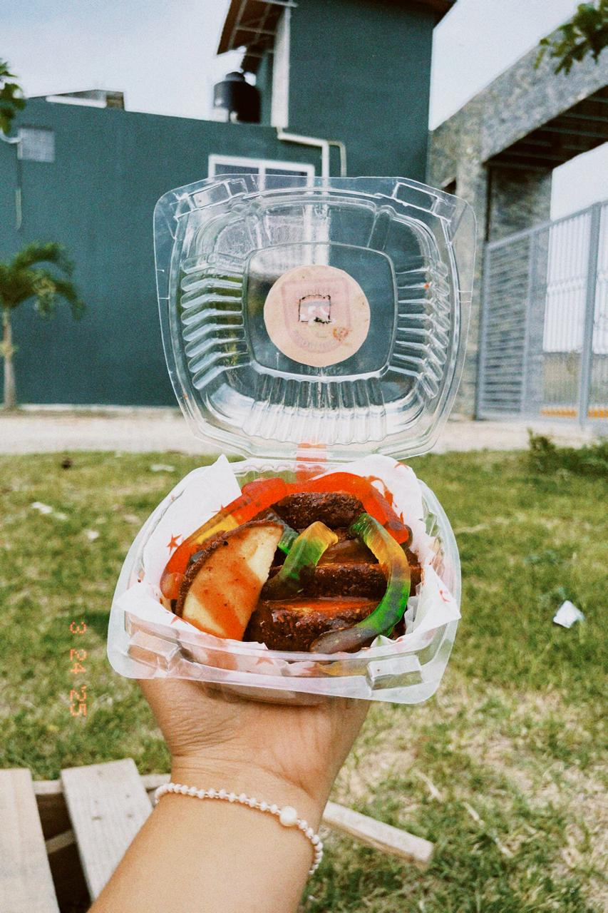

Preguntas frecuentes

¿Qué ingredientes utilizan en sus productos?
En ChilApple nos esforzamos por preparar un alimento de buena calidad, con ingredientes que sean atractivos y saludables para el consumidor, es por ello que nuestra receta incluye; Manzanas nutritivas y frescas, chiles en polvo, cubierta de chamoy y un envasado higiénico.

¿Cuáles son las opciones de acompañamientos disponibles?
Tenemos dos opciones en nuestro menú: Gomitas de Gusanito y Picafresas, el consumidor puede elegir la que sea de su preferencia.

¿ChilApple tiene opciones de entrega a domicilio o en tienda?
ChilApple por el momento solo entrega en puntos estratégicos de entrega. Aún nos falta camino por recorrer; sin embargo, ¡muy pronto estaremos mucho más cerca de ustedes!